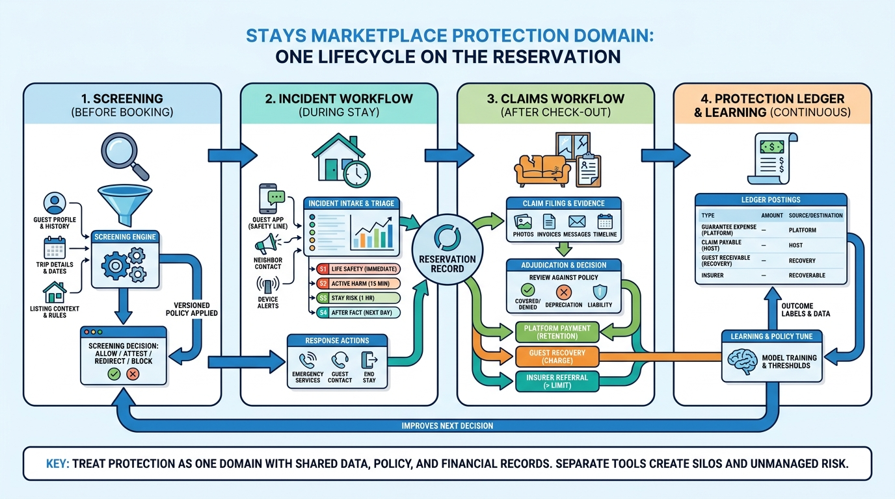

Part VII — TRUST: Making Strangers Safe to Stay With
Damage, Parties and Emergencies: Protection and Incident Response

Image generated by Google Gemini (gemini-3-pro-image-preview)
Part VII — TRUST: Making Strangers Safe to Stay With

Image generated by Google Gemini (gemini-3-pro-image-preview)